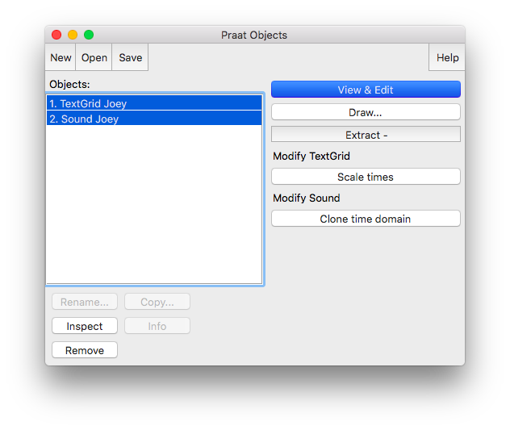
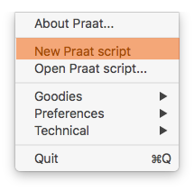
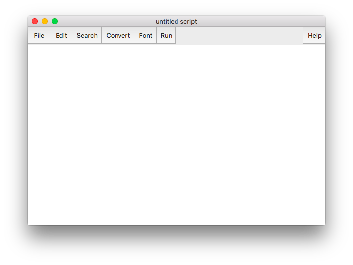
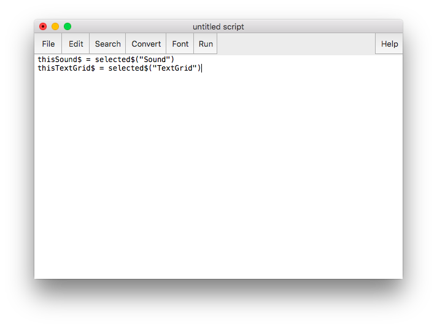
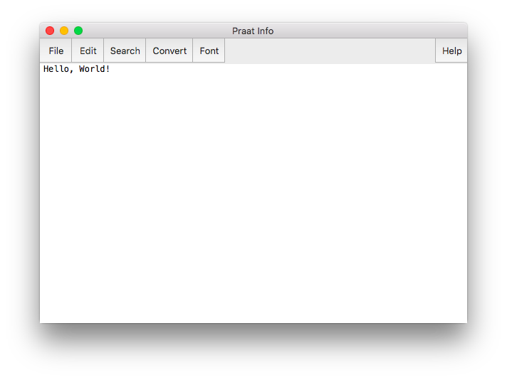
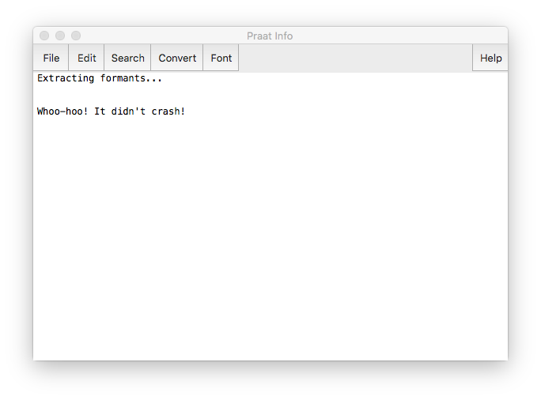
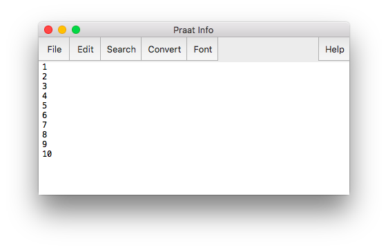
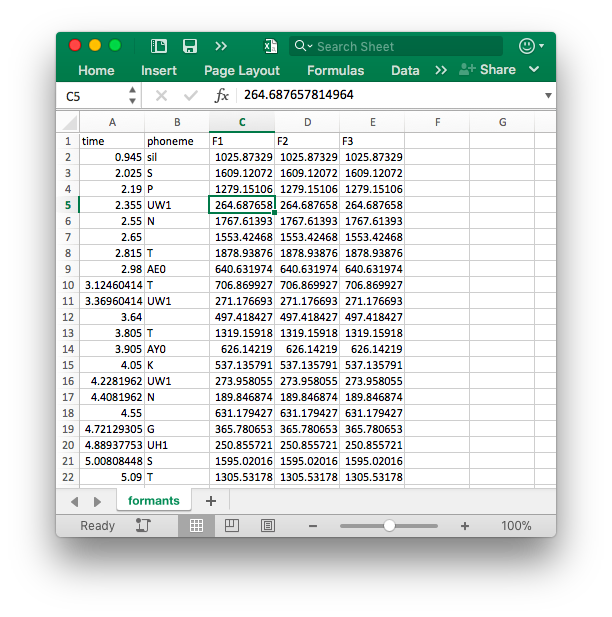

I gave a workshop that covered the contents of this workshop. You can find the handout here, which is slightly modified from this blog post.
Just this week I’ve had three people ask for a Praat script that extracts formant measurements. I’ve been meaning to create some Praat scripting tutorials so this was a good excuse to get something going. Instead of providing you a Praat script, I’m going to show how to write your own. Instead of giving you a fish to feed you for a night, I’ll teach you how to fish.
Note, this post was written in small chunks over Christmas break with my in-laws in town and I haven’t had time to proofread it carefully. I explain what to do, but I barely skim the surface when it comes to why you need to do it that way (for example, I gloss over basic computer coding concepts like for loops and variables). Hopefully it’ll work for you.
Sample data
For this tutorial, I’ll work with a recording of myself reading a couple dozen words with the /u/ vowel that I created for something a few months ago. I did the word-level transcription by hand (including boundaries) and then I sent it off to DARLA for forced alignment. Here’s what one word looks like:

The important part to note is that I have the word-level transcription in the second tier, and a phoneme-level transcription—in ARPABET—in the first tier. I’m going to assume you’ve used DARLA or FAVE to process your files so they should look like mine does.
Getting Started
To get started, open Praat and load your Sound file and TextGrid. There are ways to load files in automatically through scripting—which is useful if you need to process many files—but we’ll keep it simple for now. Note that if you want to extract formants, you should load it in as a Sound file and not as a LongSound.

Once you’ve done that create a script by going to Praat > New Praat Script.

A blank window should open up for you to write your script in.

So now we have a blank canvas. Let’s pause for a second and think about what the script is going to do. The goal is to turn this phoneme-level transcription and accompanying audio into a spreadsheet of formants. To accomplish this task, there are the steps I’ll take:
- Go through each phoneme in your TextGrid.
- Find the midpoint.
- Extract formant measurements at that midpoint.
- Save those formants into some file so I can use it later (in R or something).
That’s the gist of the script. Now we “just” need to translate that into Praat’s scripting language.
Extracting the names of Praat objects
Before we can do any of that, Praat needs to figure out a few things. First off, it doesn’t even know what files to work with! We can tell it to work with the Sound and TextGrid files that are already loaded by putting in these lines of code into your Praat script:
thisSound$ = selected$("Sound") thisTextGrid$ = selected$("TextGrid")

What the first line does is it tells Praat to look at whatever Sound file is selected and extract its name. This name is then stored in a variable called thisSound$. The dollar sign at the end of that variable name means that the variable contains text rather than a number (in computer circles, text is often called “strings,” as in a string of characters). My Sound file is called “Joey”, so now the variable thisSound$ contains the string “Joey”.
The second line does the exact same thing, but it looks saves the name of the TextGrid instead. The end result of these two lines of code is that Praat now has the names of the two files you highlighted. They’re saved in these variable names so we can call upon them later on in the script when we need to.
To run this script, go to where the two files are in the Objects Window and select both of them.
Then, go to your scripting window and click Run > Run (or command+R in Macs). This will run the entire script all at once. Nothing seemingly happens because it’s so simple, but assuming you don’t have any errors, then it should run fine. If you do have errors, check to make sure you’ve typed (or copy and pasted) the code correctly, and make sure that both the Sound file and TextGrid are loaded into Praat and are highlighted.
Getting feedback from Praat
If you want some visual feedback just to know Praat ran, you can have Praat write messages to you. For example, you can do a simple “Hello, World!” with the writeInfo command (be sure to note the capitalized I in writeInfo!):
writeInfo: "Hello, World!"
When you run this, it’ll open a new window, the Praat Info window, and will display that text.

A couple things to note. There are four variants of this command:
writeInfoclears whatever text is in the Praat Info window and replaces it with your new text.writeInfoLinedoes the same aswriteInfobut it adds a new line character to the end. In other words, it makes sure that the next thing you write is on a new line rather than as a continuation of the current line.appendInfodoesn’t erase what was there before and simply appends text to the Praat Info window.appendInfoLinedoes the same asappendInfobut with a new line character at the end.
I almost always use appendInfoLine for these messages, except for the very first one in a script which is writeInfoLine. I hardly ever use writeInfo or appendInfo.
To make sure that Praat is running, let’s put something useful at the start of our script, just to let us know what’s going on.
writeInfoLine: "Extracting formants..."
Now, every time you run the script, you’ll get that message. I also like to end my scripts with a little message saying that it’s done, just so I know that the script didn’t crash.
appendInfoLine: newline$, newline$ "Whoo-hoo! It didn't crash!"
So at this point, your script should match the following block of code, and when you run it your Praat Info box should be the same as mine.
writeInfoLine: "Extracting formants..." thisSound$ = selected$("Sound") thisTextGrid$ = selected$("TextGrid") appendInfoLine: newline$, newline$, "Whoo-hoo! It didn't crash!"

So far this script is pretty useless. Let’s actually get it to work for you.
Finding the number of phonemes
Now that we’ve told Praat where to find the names of the files, we can start processing them. Our first step is to examine each phoneme in our TextGrid one at a time. To do this, we need to know how many potential phonemes there are for us to look through. We can do this using the Get number of intervals command:
select TextGrid 'thisTextGrid$' numberOfPhonemes = Get number of intervals: 1
The first line of this code selects the TextGrid with the name that’s stored inside the thisTextGrid$ variable name. It we want to work with TextGrids, we have to select them in Praat. Since we need to extract information about the TextGrid (how many phonemes there are) we need to make sure Praat is working with the right object.
What the next line does is it goes to the first tier—hence the 1 in that line—and it finds out how many intervals there are in it. This number is saved into a new variable called numberOfPhonemes. Remember that all of these variable names are completely arbitrary and you can call them whatever you want. I tend to use verbose names, but that’s just my own style of Praat scripting. Also, remember that the variable name numberOfPhonemes does not end with a $ sign because this stores a number instead of a string.
To see how many of these intervals there are, let’s display this information:
appendInfoLine: "There are ", numberOfPhonemes, " intervals."
In my file, I’m told there are 534 intervals. This includes all the vowels but also all the consonants and all the blank intervals between words. So now your script looks like this:
writeInfoLine: "Extracting formants..." thisSound$ = selected$("Sound") thisTextGrid$ = selected$("TextGrid") select TextGrid 'thisTextGrid$' numberOfPhonemes = Get number of intervals: 1 appendInfoLine: "There are ", numberOfPhonemes, " intervals." appendInfoLine: newline$, newline$, "Whoo-hoo! It didn't crash!"
So now we have a script that knows what files to look at and how many intervals there are on the phoneme tier in the TextGrid.
Loop through the intervals
What we now need to do is construct a for loop. This is something that can be done in virtually every programming language. We tell Praat to execute the same command some pre-specified number of times. In this case, we want to do analyze and extract information from potentially all 534 intervals in the phoneme tier, so we’ll run a loop 534 times.
A for loop example in Praat looks like this:
for i from 1 to 10 ...do stuff here... ...do more stuff here... endfor
On the outside there is code to indicate where the loop starts and stops. Everything between those lines is what gets executed some number of times. Here, it’s going to run 10 times, because we told it to do this from1to10. Note that while not necessary, it’s a good idea to indent any code that is in the for loop. It just makes the structure of your code easier to see.
To keep track of what iteration we’re on, it also creates a variable called i that stores the nth iteration we’re on. In other words, on the first iteration of the loop, i = 1, on the second, i = 2, etc. In fact, we can print out this i variable each time:
for i from 1 to 10 appendInfoLine: i endfor

So instead of looping from 1 to 10, we can loop from 1 to however many intervals we have. We do this by replacing the 10 with the variable name numberOfPhonemes. I’m also going to change the variable name from i to thisInterval because to me it’s clearer that way. Your script should look like this now:
writeInfoLine: "Extracting formants..." thisSound$ = selected$("Sound") thisTextGrid$ = selected$("TextGrid") select TextGrid 'thisTextGrid$' numberOfPhonemes = Get number of intervals: 1 appendInfoLine: "There are ", numberOfPhonemes, " intervals." for thisInterval from 1 to numberOfPhonemes appendInfoLine: thisInterval endfor appendInfoLine: newline$, newline$, "Whoo-hoo! It didn't crash!"
When you run your script now (after highlighting both the Sound and the TextGrid as usual), it’ll just print a list of numbers from 1 to however many intervals you have. If you have several hundred intervals or more, you’ll notice that the rate that it prints things gradually decreases. I’ve noticed that Praat loops get slower and slower as they go on—but only when printing things out! They’re still lightening fast if you don’t print anything.
Detecting the phoneme
So we’ve got a loop going from 1 to 534. But those are just numbers—we’re not actually getting any information about the TextGrid itself. We need to actually start working with the intervals in the TextGrid. We can do this using the loop: on the 1st iteration, look at the 1st interval in the TextGrid. On the second iteration of the loop, look at the second interval. Keep doing this until we’re on the 534th iteration of the loop and we look at the 534th (and last) interval. So in this way we’re technically looping through numbers still but use those to access the TextGrid. I don’t know of a way to loop through the intervals themselves.
We need to start by seeing the contents of those intervals, i.e. their “labels”. To do that, we need to use the function Get label of interval:. As additional “arguments” to this function, we need to tell it what tier to look at and then what interval. So if we want to look at the third interval of the top(=first) tier, we would use this code:
Get label of interval: 1, 3
This command would go to the third interval in the first tier and would pull out whatever text is in there. We can save this text by starting that line of code with “thisPhoneme$”:
thisPhoneme$ = Get label of interval: 1, 3
What we can do is put this inside of the loop, and instead of specifically saying to look at the third interval, we’ll put in the thisInterval variable. Remember thisInterval changes for every iteration of the loop, from 1 to 534. We’ll save this into the new variable thisPhoneme$. So our for loop might now look like this:
# Loop through each interval on the phoneme tier. for thisInterval from 1 to numberOfPhonemes #appendInfoLine: thisInterval # Get the label of the interval select TextGrid 'thisTextGrid$' thisPhoneme$ = Get label of interval: 1, thisInterval endfor
If you run the code as is, it’s almost instantaneous. But you can’t tell what’s going on. If you’d like you can add appendInfoLine: thisPhoneme$ just before the end of the for loop, but when you run it it’s noticeably slower. But at least you can get some feedback to make sure that the code is working properly.
# Loop through each interval on the phoneme tier. for thisInterval from 1 to numberOfPhonemes #appendInfoLine: thisInterval # Get the label of the interval select TextGrid 'thisTextGrid$' thisPhoneme$ = Get label of interval: 1, thisInterval #appendInfoLine: thisPhoneme$ endfor
Like the previous appendInfoLine line, I’ll comment it out again, but it’s there in case you need to debug or something.
So, our script with everything so far should look like this:
writeInfoLine: "Extracting formants..." # Extract the names of the Praat objects thisSound$ = selected$("Sound") thisTextGrid$ = selected$("TextGrid") # Extract the number of intervals in the phoneme tier select TextGrid 'thisTextGrid$' numberOfPhonemes = Get number of intervals: 1 appendInfoLine: "There are ", numberOfPhonemes, " intervals." # Loop through each interval on the phoneme tier. for thisInterval from 1 to numberOfPhonemes #appendInfoLine: thisInterval # Get the label of the interval select TextGrid 'thisTextGrid$' thisPhoneme$ = Get label of interval: 1, thisInterval #appendInfoLine: thisPhoneme$ endfor appendInfoLine: newline$, newline$, "Whoo-hoo! It didn't crash!"
Determining the extraction time
So we’ve got a loop that looks at each interval on the phoneme tier. It’s common and relatively straightforward to extract formants at the midpoint of each vowel. So the next step is to find exactly at what time point in the file the midoint of each interval is.
Unfortunately, there’s no command that gets the midpoint as far as I’m aware. But we can use simple math to determine the midpoint: it’s just halfway between the beginning and the end of the interval. Luckily, we can extract the beginning and end times of the interval. Let’s do that using the Get start point: and Get end point: functions. Both of these take two arguments: the tier and the interval number to look at. In my file, the phoneme tier is tier 1, and the interval number is saved in the variable thisInterval. I’ll save these numbers into variables called thisPhonemeStartTime and thisPhonemeEndTime (again, my Praat variables tend to be verbose for clarity).
thisPhonemeStartTime = Get start point: 1, thisInterval thisPhonemeEndTime = Get end point: 1, thisInterval
To find the midpoint between these, I calculate the duration and add half of that to the start time:
duration = thisPhonemeEndTime - thisPhonemeStartTime midpoint = thisPhonemeStartTime + duration/2
Now, the variable midpoint contains the time (in seconds) of how far into the audio to extract formant measurements. Keep in mind that, just like everything inside the loop, this changes for each interval as we loop through them one at a time. At any one point, midpoint only has one number stored in it, but this will change at every iteration of the loop.
Now our script looks like this:
writeInfoLine: "Extracting formants..." # Extract the names of the Praat objects thisSound$ = selected$("Sound") thisTextGrid$ = selected$("TextGrid") # Extract the number of intervals in the phoneme tier select TextGrid 'thisTextGrid$' numberOfPhonemes = Get number of intervals: 1 appendInfoLine: "There are ", numberOfPhonemes, " intervals." # Loop through each interval on the phoneme tier. for thisInterval from 1 to numberOfPhonemes #appendInfoLine: thisInterval # Get the label of the interval select TextGrid 'thisTextGrid$' thisPhoneme$ = Get label of interval: 1, thisInterval #appendInfoLine: thisPhoneme$ # Find the midpoint. thisPhonemeStartTime = Get start point: 1, thisInterval thisPhonemeEndTime = Get end point: 1, thisInterval duration = thisPhonemeEndTime - thisPhonemeStartTime midpoint = thisPhonemeStartTime + duration/2 endfor appendInfoLine: newline$, newline$, "Whoo-hoo! It didn't crash!"
Creating a Formant Object
We finally have all the information needed to actually extract formants. The first step for formant extraction is to create a “formant object.” Honestly, I’m not completely sure what a formant object is under the hood, but the important part is that you need to need it to get formant measurements.
We actually only need to do this once for the entire file, rather than for every iteration of the loop. We just create one object and then query from it. We do this by selecting the Sound object and then using the command To Formant (burg)... on it. This command takes five arguments: the time step, the maximum number of formants, the maximum hertz, the window length, and the dynamic range (in decibels). I don’t know enough about how this is done to say anything about the time step, window length, and dynamic range, but the maximum number of hertz and the number of formants is important. Praat’s recommended settings are 5000 Hz for men and 5500 for women, each with five formants, but you should play around with these settings to see which ones produce the cleanest data.
# Create the Formant Object select Sound 'thisSound$' To Formant (burg)... 0 5 5000 0.025 50
This bit of code should go just before the loop. I’ve got mine after where we extract the names of the Praat objects, and before before finding out how many intervals there are on the phoneme tier. Your code should now look like this:
writeInfoLine: "Extracting formants..." # Extract the names of the Praat objects thisSound$ = selected$("Sound") thisTextGrid$ = selected$("TextGrid") # Extract the number of intervals in the phoneme tier select TextGrid 'thisTextGrid$' numberOfPhonemes = Get number of intervals: 1 appendInfoLine: "There are ", numberOfPhonemes, " intervals." # Create the Formant Object select Sound 'thisSound$' To Formant (burg)... 0 5 5000 0.025 50 # Loop through each interval on the phoneme tier. for thisInterval from 1 to numberOfPhonemes #appendInfoLine: thisInterval # Get the label of the interval select TextGrid 'thisTextGrid$' thisPhoneme$ = Get label of interval: 1, thisInterval #appendInfoLine: thisPhoneme$ # Find the midpoint. thisPhonemeStartTime = Get start point: 1, thisInterval thisPhonemeEndTime = Get end point: 1, thisInterval duration = thisPhonemeEndTime - thisPhonemeStartTime midpoint = thisPhonemeStartTime + duration/2 endfor appendInfoLine: newline$, newline$, "Whoo-hoo! It didn't crash!"
Note that creating formant objects takes a relatively long time. Up until now, your Praat script was probably near-instantaneous. Now it might take a few seconds to a few minutes, depending on how long your file is.
Formant Extraction
At last, we can now extract formants. We’ve got the times we need to extract from (the midpoint variable), and now we have the formant object to query. The command we need is Get value at time..., which takes four arguments: the formant number, the time, the units, and the interpolation. The formant number is just a number (1 for F2, 2 for F2, etc.), and the time is the time point we want to extract from (this is saved in the midpoint variable in our code). I always use Hertz and Linear for the other two arguments because of inherited code I had when I was first learning Praat but you’re welcome to explore the other options Praat has available.
To run this command, we actually need to select the Formant object rather than the Sound or TextGrid. Since this object has the same name as the Sound object, we can refer to the Formant object by name using the thisSound$ variable.
# Extract formant measurements select Formant 'thisSound$'
We then run the function three times, one for each formant, and save it into three new variables, f1, f2, and f3.
f1 = Get value at time... 1 midpoint Hertz Linear f2 = Get value at time... 2 midpoint Hertz Linear f3 = Get value at time... 3 midpoint Hertz Linear
In your code, this goes after where we find the midpoint but still inside the loop. So your code should now look like this:
writeInfoLine: "Extracting formants..." # Extract the names of the Praat objects thisSound$ = selected$("Sound") thisTextGrid$ = selected$("TextGrid") # Extract the number of intervals in the phoneme tier select TextGrid 'thisTextGrid$' numberOfPhonemes = Get number of intervals: 1 appendInfoLine: "There are ", numberOfPhonemes, " intervals." # Create the Formant Object select Sound 'thisSound$' To Formant (burg)... 0 5 5000 0.025 50 # Loop through each interval on the phoneme tier. for thisInterval from 1 to numberOfPhonemes #appendInfoLine: thisInterval # Get the label of the interval select TextGrid 'thisTextGrid$' thisPhoneme$ = Get label of interval: 1, thisInterval #appendInfoLine: thisPhoneme$ # Find the midpoint. thisPhonemeStartTime = Get start point: 1, thisInterval thisPhonemeEndTime = Get end point: 1, thisInterval duration = thisPhonemeEndTime - thisPhonemeStartTime midpoint = thisPhonemeStartTime + duration/2 # Extract formant measurements select Formant 'thisSound$' f1 = Get value at time... 1 midpoint Hertz Linear f2 = Get value at time... 2 midpoint Hertz Linear f3 = Get value at time... 3 midpoint Hertz Linear endfor appendInfoLine: newline$, newline$, "Whoo-hoo! It didn't crash!"
Hooray! You’ve extracted formant measurements! Unfortunately, we didn’t save any of this information, so it was lost as soon as the script finished. In the next section, we’ll look at how to save these measurements into an external file.
Save to a file
The easiest way to save formants is to write them out to some sort of spreadsheet. So before the loop starts I create the file and write the first line out (the headers). Then, within the loop and after I’ve extracted the formant measurements, I append to that file one line that contains all the information I’ve just extracted.
To start with the first line, we use the command writeFileLine:. This is analogous to the writeInfoLine function I described previously, only this time it writes the information out onto some file. As the first argument, you need to supply a path name. I’ll create a file called formants.csv, which is located in the folder /Users/joeystanley/Desktop/Projects/Praat/. Note that I’m on a Mac, and Windows users will probably need to use double forward slashes instead of backslashes: C:\\Users\\joeystanley\\Desktop\\Projects\\Praat\\.
For convenience, I like to save the path to the file into a variable called outputPath$. After doing that, we can then just refer to it in the writeFileLine: function. This goes just before your loop.
# Create the output file and write the first line. outputPath$ = "/Users/joeystanley/Desktop/Projects/Praat/formants.csv"
We then have to decide what information we want to save. All we have right now is the time, the phoneme, and the first three formants. We’ll start with that. In writeFileLine:, be sure to put outputPath$ first, a comma, and then whatever you want to have on the top line, each separated by a comma. (We use commas as separators since we’re making a csv, a “comma separated value” file.) Be sure to mind the quotes.
writeFileLine: "'outputPath$'", "time,phoneme,F1,F2,F3"
After you run this, a new spreadsheet should have been created that contains that top line. Now we need to add the rest of the spreadsheet. Down inside your loop, just after the part where you extract the formants, add this block of code:
# Save to a spreadsheet appendFileLine: "'outputPath$'", ...midpoint, ",", ...thisPhoneme$, ",", ...f1, ",", ...f2, ",", ...f3
What I’m doing is just like writing out that first line, only I’m using variable names and I’ve separated it out onto multiple lines. We start out by referencing the outputPath$ variable name, and then proceed to add each cell of that row of the spreadsheet. When we refer to variable names, we don’t need to put them in quotes, but then because we need to add the comma afterwards, we have to add the whole ",", business afterwards. To have a line of code spill over into multiple lines, just start the next line with a ... before putting the actual content.
Your code should now look like this:
writeInfoLine: "Extracting formants..." # Extract the names of the Praat objects thisSound$ = selected$("Sound") thisTextGrid$ = selected$("TextGrid") # Extract the number of intervals in the phoneme tier select TextGrid 'thisTextGrid$' numberOfPhonemes = Get number of intervals: 1 appendInfoLine: "There are ", numberOfPhonemes, " intervals." # Create the Formant Object select Sound 'thisSound$' To Formant (burg)... 0 5 5000 0.025 50 # Create the output file and write the first line. outputPath$ = "/Users/joeystanley/Desktop/Projects/Praat/formants.csv" writeFileLine: "'outputPath$'", "time,phoneme,F1,F2,F3" # Loop through each interval on the phoneme tier. for thisInterval from 1 to numberOfPhonemes #appendInfoLine: thisInterval # Get the label of the interval select TextGrid 'thisTextGrid$' thisPhoneme$ = Get label of interval: 1, thisInterval #appendInfoLine: thisPhoneme$ # Find the midpoint. thisPhonemeStartTime = Get start point: 1, thisInterval thisPhonemeEndTime = Get end point: 1, thisInterval duration = thisPhonemeEndTime - thisPhonemeStartTime midpoint = thisPhonemeStartTime + duration/2 # Extract formant measurements select Formant 'thisSound$' f1 = Get value at time... 1 midpoint Hertz Linear f2 = Get value at time... 2 midpoint Hertz Linear f3 = Get value at time... 3 midpoint Hertz Linear # Save to a spreadsheet appendFileLine: "'outputPath$'", ...midpoint, ",", ...thisPhoneme$, ",", ...f1, ",", ...f2, ",", ...f3 endfor appendInfoLine: newline$, newline$, "Whoo-hoo! It didn't crash!"
When you run this code, you should now have a spreadsheet that is populated with the relevant information.

Now, because formants are typically extracted for vowel, you’re probably going to want to filter out all the consonants when you analyze this data in R or something. It’s possible to do in Praat, but for simplicity I’m leaving that out of this tutorial.
But hey! Congrats! You now have a spreadsheet full of formant values! Now, we need to put some final touches on your code to make it work better for you.
Add other output
First off, you’ll probably want to put the filename in this output. If you’ve got multiple speakers, it’s easy to lose track of which file belongs to which, especially if you name them all “formants.csv”. We have the filename already stored in a variable called thisSound$, so we can just add that in with the output, both at the top and the bottom portions.
# Create the output file and write the first line. outputPath$ = "/Users/joeystanley/Desktop/Projects/Praat/formants.csv" writeFileLine: "'outputPath$'", "file,time,phoneme,F1,F2,F3" ... # Save to a spreadsheet appendFileLine: "'outputPath$'", ...thisSound$, ",", ...midpoint, ",", ...thisPhoneme$, ",", ...f1, ",", ...f2, ",", ...f3
It would also be good to know what word these formants came from. We have what phoneme it was, but no information about the word. We’ve seen how to get the label of an interval given an interval number, but now we need to get the interval number given a specific time. First, this will go after formant extraction which is working with the formant object, so we need to switch back to the TextGrid object.
select TextGrid 'thisTextGrid$'
Then, we’ll use the Get interval at time: function and supply what tier number we want to look at (tier 2 in this file) and the time (stored in the midpoint variable). This will return a number, which is the nth interval in the word tier that contains that time. We’ll save that into a variable called thisWordInterval.
thisWordInterval = Get interval at time: 2, midpoint
Finally, we’ll use that number like we did before and get the label of the interval, this time querying from the word tier.
thisWord$ = Get label of interval: 2, thisWordInterval
The end result is a new variable called thisWord$ which contains the word that the phoneme is in. We then need to add that to our output like before:
# Create the output file and write the first line. outputPath$ = "/Users/joeystanley/Desktop/Projects/Praat/formants.csv" writeFileLine: "'outputPath$'", "file,time,word,phoneme,F1,F2,F3" ... # Save to a spreadsheet appendFileLine: "'outputPath$'", ...thisSound$, ",", ...midpoint, ",", ...thisWord$, ",", ...thisPhoneme$, ",", ...f1, ",", ...f2, ",", ...f3
The Finished Product!
We’re done! After making the above changes, the script looks like this:
writeInfoLine: "Extracting formants..." # Extract the names of the Praat objects thisSound$ = selected$("Sound") thisTextGrid$ = selected$("TextGrid") # Extract the number of intervals in the phoneme tier select TextGrid 'thisTextGrid$' numberOfPhonemes = Get number of intervals: 1 appendInfoLine: "There are ", numberOfPhonemes, " intervals." # Create the Formant Object select Sound 'thisSound$' To Formant (burg)... 0 5 5000 0.025 50 # Create the output file and write the first line. outputPath$ = "/Users/joeystanley/Desktop/Projects/Praat/formants.csv" writeFileLine: "'outputPath$'", "file,time,word,phoneme,F1,F2,F3" # Loop through each interval on the phoneme tier. for thisInterval from 1 to numberOfPhonemes #appendInfoLine: thisInterval # Get the label of the interval select TextGrid 'thisTextGrid$' thisPhoneme$ = Get label of interval: 1, thisInterval #appendInfoLine: thisPhoneme$ # Find the midpoint. thisPhonemeStartTime = Get start point: 1, thisInterval thisPhonemeEndTime = Get end point: 1, thisInterval duration = thisPhonemeEndTime - thisPhonemeStartTime midpoint = thisPhonemeStartTime + duration/2 # Extract formant measurements select Formant 'thisSound$' f1 = Get value at time... 1 midpoint Hertz Linear f2 = Get value at time... 2 midpoint Hertz Linear f3 = Get value at time... 3 midpoint Hertz Linear # Get the word interval and then the label select TextGrid 'thisTextGrid$' thisWordInterval = Get interval at time: 2, midpoint thisWord$ = Get label of interval: 2, thisWordInterval # Save to a spreadsheet appendFileLine: "'outputPath$'", ...thisSound$, ",", ...midpoint, ",", ...thisWord$, ",", ...thisPhoneme$, ",", ...f1, ",", ...f2, ",", ...f3 endfor appendInfoLine: newline$, newline$, "Whoo-hoo! It didn't crash!"
So for now, this is the finished product. There’s still a lot of things that could be made to this script to make it easier to use in the future (such as saving the tier numbers as variables, detecting whether an interval contains a vowel, adding flexibility in the formant extraction settings, and running this script on multiple files at once) but that’ll have to wait for another blog post. This script should get you the information you want if you want to do a basic formant extraction.
Conclusion
As I said in the introduction, this tutorial has shown you what to do, but not necessarily how or why. To learn more about how this is done—and especially to learn how to modify it to suit your own needs better—you’ll have to get your hands dirty and play around and learn on your own. Google and Praat’s built-in documentation will have everything you need.
More importantly, what I can’t teach is the thought process of how the code should be set up. How did I know to do it as a loop? How did I know to use those functions? My answer is trial and error. When faced with a task (“I want to extract formant measurements automatically in Praat. How can I do that?”), I started googling. I found other Praat scripts—lots of others—that had pieces of what I wanted, and pretty much all of mine are Frankensteined together from whatever I could find online. I had to see what they did and how they did it in order to learn. You can too!
Comments
At this point, we’ve started to write some code that might not be immediately transparent. It’s good to pause and put comments in your code. Comments, which are just lines that start with the pound symbol (
#), are ignored by Praat and serve the purpose of making your code more readable. You might want to add comments above each block of code to remind yourself about what they do.You can put more comments to explain the nitty-gritty details about things too. Like it might be good to mention that the phoneme tier is on top so that’s why the
1is in that line of code. It’s all up to you. It’s a really good idea to at least put some comments in. Not only is it good coding practice, but you’ll thank yourself next time you go look at the script.For now I’m going to “comment out” the one line of code inside the for loop, the one that prints the interval number. This is because it slows Praat down a lot. Putting the pound sign at the start treats it like a comment, meaning it gets ignored by Praat, but is good to have in code you want to put it back in for whatever reason.